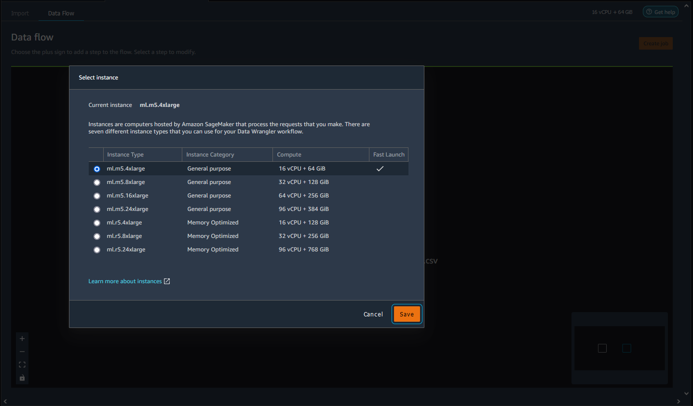
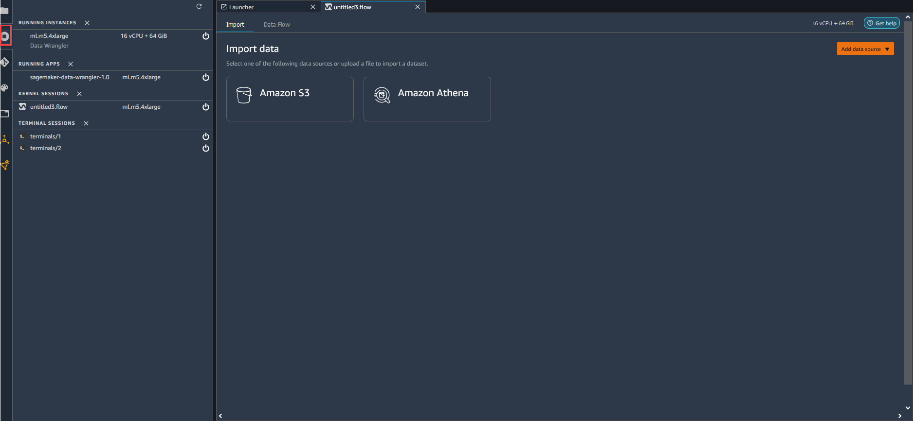
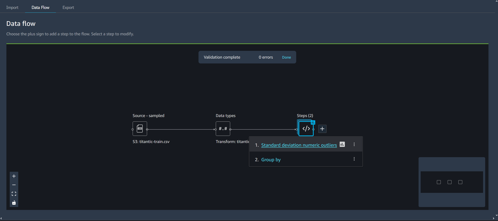

Create and Use a Data Wrangler Flow
Use an Amazon SageMaker Data Wrangler flow, or a data flow, to create and modify a data preparation pipeline. The data flow connects the datasets, transformations, and analyses, or steps, you create and can be used to define your pipeline.
Instances
When you create a Data Wrangler flow in Amazon SageMaker Studio, Data Wrangler uses an Amazon EC2 instance to run the analyses and transformations in your flow. By default, Data Wrangler uses the m5.4xlarge instance. m5 instances are general purpose instances that provide a balance between compute and memory. You can use m5 instances for a variety of compute workloads.
Data Wrangler also gives you the option of using r5 instances. r5 instances are designed to deliver fast performance that processes large datasets in memory.
We recommend that you choose an instance that is best optimized around your workloads. For example, the r5.8xlarge might have a higher price than the m5.4xlarge, but the r5.8xlarge might be better optimized for your workloads. With better optimized instances, you can run your data flows in less time at lower cost.
The following table shows the instances that you can use to run your Data Wrangler flow.
| Standard Instances | vCPU | Memory |
|---|---|---|
| ml.m5.4xlarge | 16 | 64 GiB |
| ml.m5.8xlarge | 32 | 128 GiB |
| ml.m5.16xlarge | 64 |
256 GiB |
| ml.m5.24xlarge | 96 | 384 GiB |
| r5.4xlarge | 16 | 128 GiB |
| r5.8xlarge | 32 | 256 GiB |
| r5.24xlarge | 96 | 768 GiB |
For more information about r5 instances, see Amazon EC2 R5 Instances
Each Data Wrangler flow has an Amazon EC2 instance associated with it. You might have multiple flows that are associated with a single instance.
For each flow file, you can seamlessly switch the instance type. If you switch the instance type, the instance that you used to run the flow continues to run.
To switch the instance type of your flow, do the following.
-
Choose the home icon,
 .
. -
Navigate to the instance that you're using and choose it.
-
Choose the instance type that you want to use.
 -
Choose Save.
You are charged for all running instances. To avoid incurring additional charges, shut down the instances that you aren't using manually. To shut down an instance that is running, use the following procedure.
To shut down a running instance.
-
Choose the instance icon. The following image shows you where to select the RUNNING INSTANCES icon.
 -
Choose Shut down next to the instance that you want to shut down.
If you shut down an instance used to run a flow, you temporarily can't access the flow. If you get an error while attempting to open the flow running an instance you previously shut down, wait for 5 minutes and try opening it again.
When you export your data flow to a location such as Amazon Simple Storage Service or Amazon SageMaker Feature Store, Data Wrangler runs an Amazon SageMaker processing job. You can use one of the following instances for the processing job. For more information on exporting your data, see Export.
| Standard Instances | vCPU | Memory |
|---|---|---|
| ml.m5.4xlarge | 16 | 64 GiB |
| ml.m5.12xlarge | 48 |
192 GiB |
| ml.m5.24xlarge | 96 | 384 GiB |
For more information about the cost per hour for using the available instance types,
see SageMaker Pricing
The Data Flow UI
When you import a dataset, the original dataset appears on the data flow and is named Source. If you turned on sampling when you imported your data, this dataset is named Source - sampled. Data Wrangler automatically infers the types of each column in your dataset and creates a new dataframe named Data types. You can select this frame to update the inferred data types. You see results similar to those shown in the following image after you upload a single dataset:
Each time you add a transform step, you create a new dataframe. When multiple transform steps (other than Join or Concatenate) are added to the same dataset, they are stacked.
Join and Concatenate create standalone steps that contain the new joined or concatenated dataset.
The following diagram shows a data flow with a join between two datasets, as well as two stacks of steps. The first stack (Steps (2)) adds two transforms to the type inferred in the Data types dataset. The downstream stack, or the stack to the right, adds transforms to the dataset resulting from a join named demo-join.
The small, gray box in the bottom right corner of the data flow provides an overview of number of stacks and steps in the flow and the layout of the flow. The lighter box inside the gray box indicates the steps that are within the UI view. You can use this box to see sections of your data flow that fall outside of the UI view. Use the fit screen icon ( ) to fit all steps and datasets into your UI view.
The bottom left navigation bar includes icons that you can use to zoom in ( ) and out ( ) of your data flow and resize the data flow to fit the screen ( ) . Use the lock icon ( ) to lock and unlock the location of each step on the screen.
Add a Step to Your Data Flow
Select + next to any dataset or previously added step and then select one of the following options:
-
Edit data types (For a Data types step only): If you have not added any transforms to a Data types step, you can select Edit data types to update the data types Data Wrangler inferred when importing your dataset.
-
Add transform: Adds a new transform step. See Transform Data to learn more about the data transformations you can add.
-
Add analysis: Adds an analysis. You can use this option to analyze your data at any point in the data flow. When you add one or more analyses to a step, an analysis icon ( ) appears on that step. See Analyze and Visualize to learn more about the analyses you can add.
-
Join: Joins two datasets and adds the resulting dataset to the data flow. To learn more, see Join Datasets.
-
Concatenate: Concatenates two datasets and adds the resulting dataset to the data flow. To learn more, see Concatenate Datasets.
Delete a Step from Your Data Flow
To delete a step, select the step and select Delete. If the node is a node that has a single input, you delete only the step that you select. Deleting a step that has a single input doesn't delete the steps that follow it. If you're deleting a step for a source, join, or concatenate node, all the steps that follow it are also deleted.
To delete a step from a stack of steps, select the stack and then select the step you want to delete.
You can use one of the following procedures to delete a step without deleting the downstream steps.

Edit a Step in Your Data Wrangler Flow
You can edit each step that you've added in your Data Wrangler flow. By editing steps, you can change the transformations or the data types of the columns. You can edit the steps to make changes with which you can perform better analyses.
There are many ways that you can edit a step. Some examples include changing the imputation method or changing the threshold for considering a value to be an outlier.
Use the following procedure to edit a step.
To edit a step, do the following.
-
Choose a step in the Data Wrangler flow to open the table view.
 -
Choose a step in the data flow.
-
Edit the step.
The following image shows an example of editing a step.
Note
You can use the shared spaces within your Amazon SageMaker Domain to work collaboratively on your Data Wrangler flows. Within a shared space, you and your collaborators can edit a flow file in real-time. However, neither you nor your collaborators can see the changes in real-time. When anyone makes a change to the Data Wrangler flow, they must save it immediately. When someone saves a file, a collaborator won’t be able to see it unless the close the file and reopen it. Any changes that aren’t saved by one person are overwritten by the person who saved their changes.